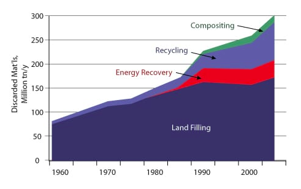

The size and the number of landfills has been increasing so quickly that America alone makes more than 200 million tons of garbage each day, enough to fill Busch Stadium from top to bottom twice a day. The United States Environmental Protection Agency(EPA) estimates that 75 % of the American waste stream is recyclable, but we only recycle about 30 % of it.
Recycling one aluminum can may save enough energy to listen to a full album on your iPod. Recycling 100 cans has the capacity to illuminate your bedroom for two whole weeks. Similarly, In 2009, Americans threw away almost 9 million tons of glass that could fill enough tractor trailers to stretch from NYC to LA(and back!).
Moreover, the average person has the opportunity to recycle more than 25,000 cans in their life. Just 40 families in society could recycle more than a million cans in their life. Imagine the possibilities of greening the earth with millions of families around the world. Luckily, with the awareness and realization, we as a society have started to manage the waste with the scientific approach of 3R: Recycle, reuse and reduce. Below is the data which shows us that we are slowly becoming sustainable, but we must continue working to fix our problems.

Sources:
1. The Environmental Protection Agency
2. Recycle Across America: https://www.recycleacrossamerica.org/recycling-facts
3. dosomething.org: https://www.dosomething.org/us/facts/11-facts-about-recycling
4. muse.union.edu: https://muse.union.edu/mth-063-01-f18/2018/09/23/where-our-garbage-goes/
5. St. Charles County: https://www.sccmo.org/863/Recycling-Facts
6. Earth Day Network: https://www.earthday.org/2018/03/29/fact-sheet-single-use-plastics/